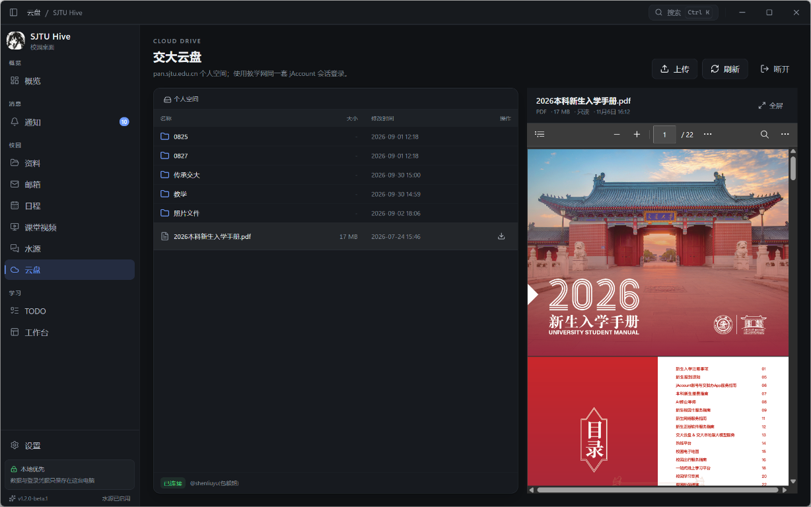
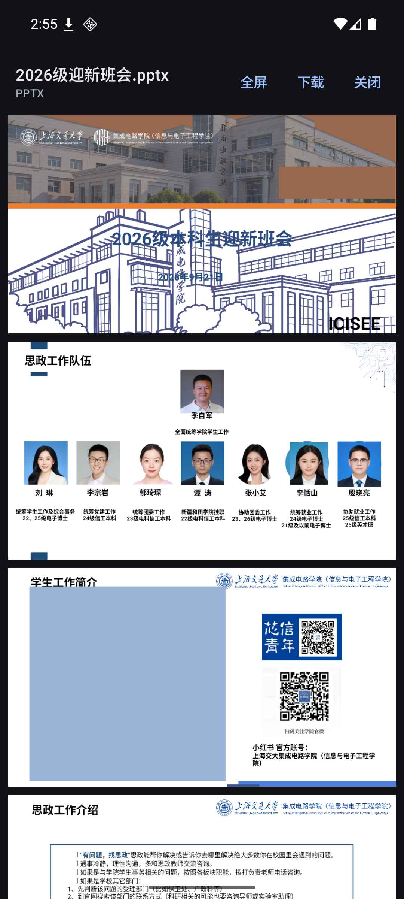

资料与内置预览
Canvas 课程、文件树、作业、页面与讨论同步。PDF、图片、音视频、DOCX/XLSX/PPTX 和旧版 Office 直接在应用内阅读，PPTX 内嵌视频也能播。
SJTU HIVE · 本地优先
Canvas 资料、校园邮箱、交大云盘、日程与考试、课堂视频、水源社区。一个不把数据交给第三方的校园客户端，Windows 与 Android 双端可用。
Features
不追求大而全，只把交大学生真正高频的入口做顺：能同步、能预览、能搜索，退出后数据仍留在本机。
Canvas 课程、文件树、作业、页面与讨论同步。PDF、图片、音视频、DOCX/XLSX/PPTX 和旧版 Office 直接在应用内阅读，PPTX 内嵌视频也能播。
IMAP/SMTP 收发、文件夹与未读计数、草稿自动保存、本地回收站。邮件附件同样走内置预览，不必先下载再找应用。
jAccount 单点登录、目录浏览、配额显示、流式预览与下载，支持上传。文件路径中的空格与中文不再导致 404。
交我办日历每小时同步，周/月视图切换；教学网考试查询、考前提醒、下一场考试卡片，和本地日程放在同一条时间线上。
单/双画面播放、播放代理、语音文稿跟随与点击跳转、断点续看。两路画面按整宽 16:9 显示，区域不足时滚动而不是裁切。
原生浏览 course.sjtu.plus 的热门课程、课程搜索与评价；使用社区独立账号登录，只保存会话，不保存密码。
原生检索 share.dyweb.sjtu.cn 的课程资料，查看资料详情与下载入口；使用 jAccount 登录，令牌只保存在本机。
Canvas Token、邮箱密码、校园 Cookie 使用系统加密后保存在本机；没有应用账号系统，不上传浏览记录，缓存与日志都在自己的数据目录。
Preview
云盘、邮箱附件、Canvas 资料、最近文件与搜索结果统一走同一套预览：支持全屏、翻页与嵌入视频，不支持的格式也能下载后用系统应用打开。


Download
桌面端使用系统 WebView2，不携带 Chromium；安卓端 Release 经过 R8 裁剪，APK 约 4 MB。两端数据都只保存在本机。
Wails + Go + React，系统 WebView2
Kotlin + Jetpack Compose，Material 3
对外只提供稳定的 x.y.z 正式版。当前正式版：1.3.1。
Release notes
新增交我办办事大厅（测试功能，默认关闭）、云盘传输队列与分享、删除与回收站、应用内更新；Windows 启动通知聚合、高优先级自启；Android 后台通知、办事图标与全屏办理页；邮件排序与深色排版修复。
新增选课社区（搜索、热门、详情与评价、我的课程）与传承交大（资料预览、免费领取、下载）；Canvas、水源社区、课堂视频统一复用校园 jAccount；新增本地/加密备份导入导出与 WebDAV 恢复；账户与概览界面精简。
Release 构建开启代码压缩与资源裁剪，APK 从约 57 MB 降到约 4 MB；移除未使用的 Coil 与图标依赖，保留 JavaMail 等运行时依赖，并随版本归档 mapping。
Feedback
这是个人维护的独立实现，欢迎把登录、同步、预览或排版的问题反馈过来。
License & Credits
SJTU Hive 是参考交大公开接口的独立实现，与上海交通大学无隶属关系。
应用源码以 MIT License 发布；Android 端部分玻璃组件来自 legado-with-MD3，按 GPL-3.0 使用。
查看 LICENSE →Compose、Wails、okhttp、JavaMail、pptx-preview、file-viewer、SheetJS 等按各自许可证使用。
第三方声明 →没有应用账号系统；登录凭据使用系统加密保存在本机，浏览与学习记录不上传。
回到顶部 →